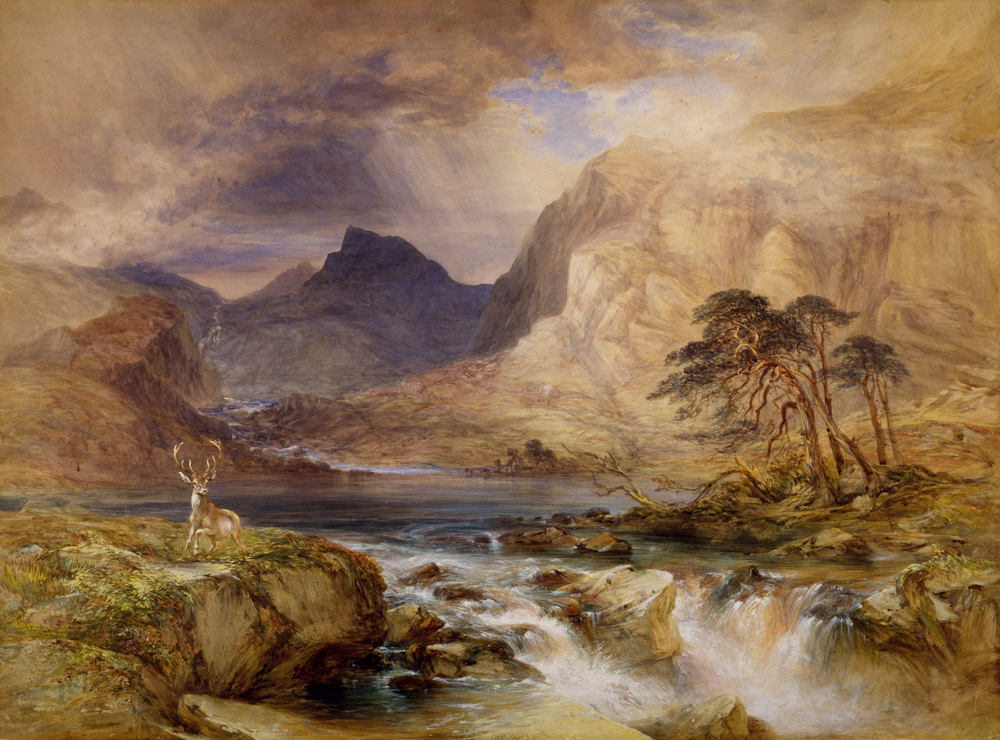

Global Kamp
En av de største prosjektene som jeg holdt så langt er Global Camp.
Global camp er en fin prosjekt som handler om sosial og inkludering i samfunnet. En av de grunnene til jeg
holdt med dette prosjektet var fordi at jeg er opptatt av å skape trygge og inkluderende møteplasser for
minoritet- og minoritetsspråklig ungdom.
- Jeg vil at ungdommer skal føle seg sett, inkludert og verdsatt
- At Ungdommene som har felles interesser blir kjent med hverandre
- Ha det gøy sammen med ulike teambyggende aktiviteter
- Være kreative sammen:holder workshoper som maling osv
- Kartlegge hva ungdommene har behov for, sosialt og faglig

Knustverk
Noen av hovedårsakene mine til å lage kunst er å uttrykke og kommunisere ideer beveger også skapelsen av
kunst, inkludert å uttrykke religiøs tro, kunstverk for å kritisere elementer i samfunnet, for å utdanne
mennesker, til og med for å vise at vi er i stand til å gjøre noe ingen andre har prøvd før. Disse er noen
av knust verkene mine som jeg er veldig stolt av. Men også noen av de som jeg har fått meget bra
tilbakemeldinger på. sjekke verkene her kunst verkene



Gaming
JavaScript har vært grunnlaget for mange spill gjennom årene.Selvfølgelig kommer folk ikke akkurat til å gå
til JavaScript for de nyeste spillutgivelsene. JavaScript understreker mindre prosjekter av en mindre gruppe
mennesker: kanskje et indiespillstudio, en tenåring på familiens datamaskin og mange flere. Prøv den www.game.com